Anime Scenes
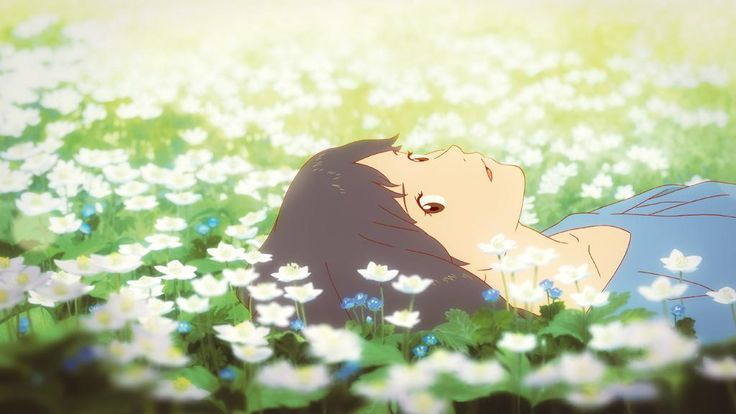
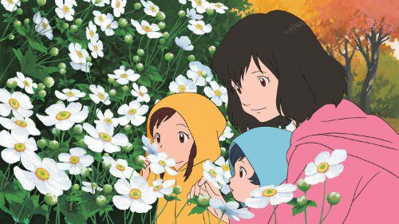
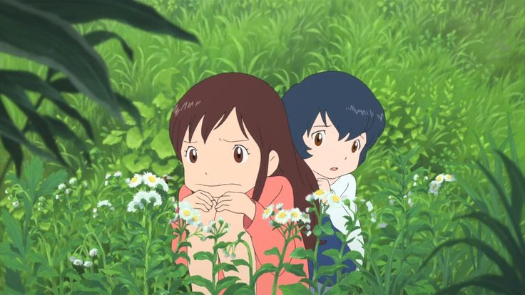
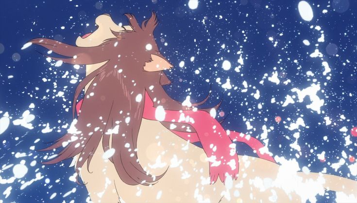
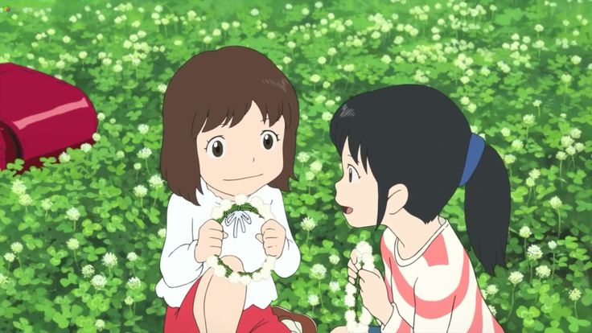
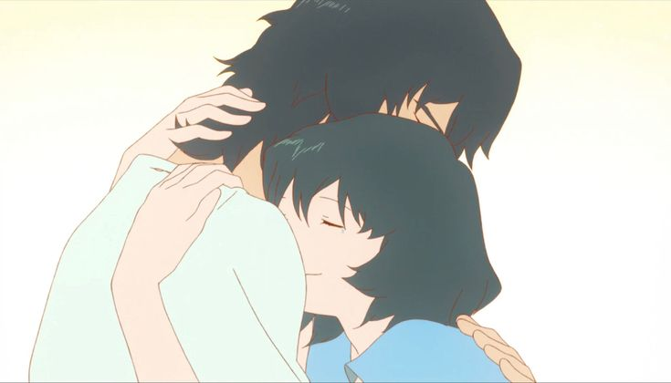
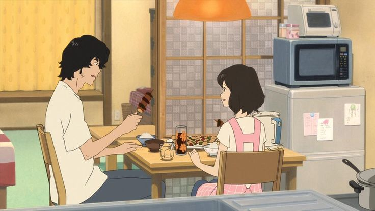
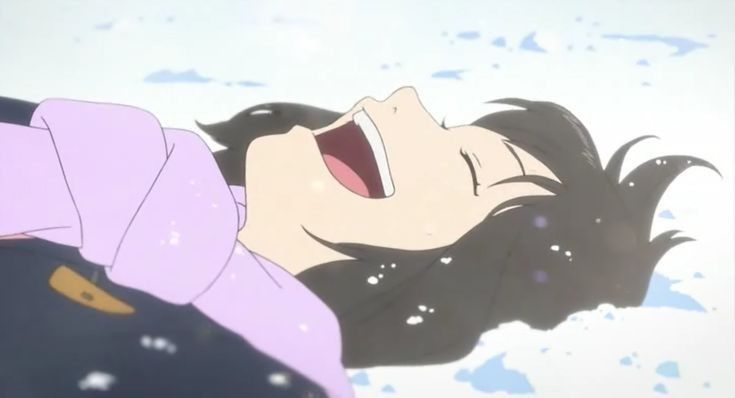
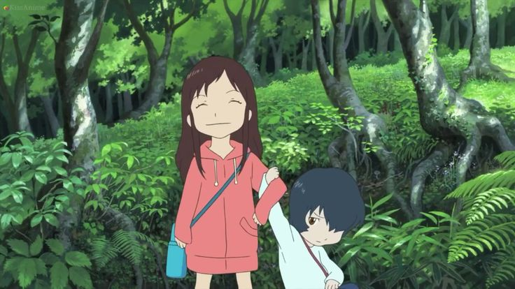
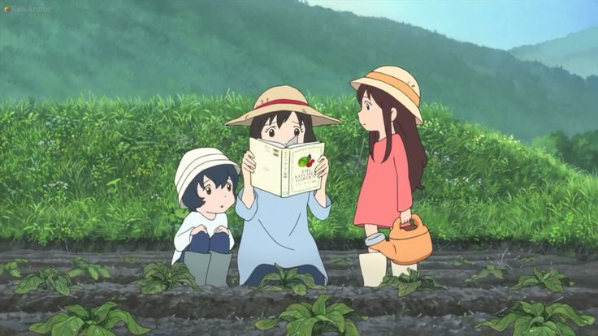
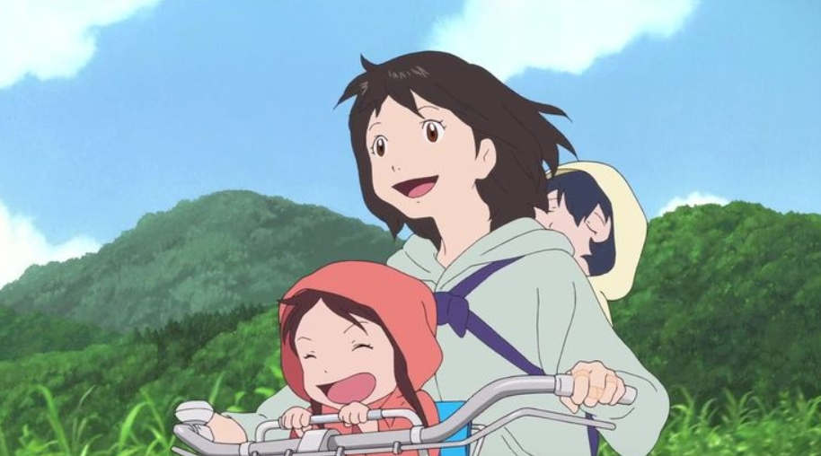
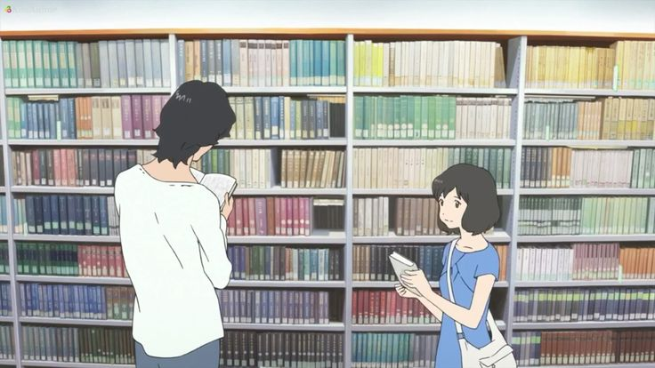
“You don’t have to rush. You can choose your own path.”
Anime Studio: Studio Chizu
Director: Mamoru Hosoda
Producer: Yuichiro Saito
Distributor: Toho, Funimation
Rating: ★ 8.1 / 10
Source: Original Story
Release Date: July 21, 2012
Runtime: 117 minutes
Music by: Masakatsu Takagi
Status: Finished
Country: Japan
Language: Japanese
Theme: Motherhood & Identity
Awards: Japan Academy Prize